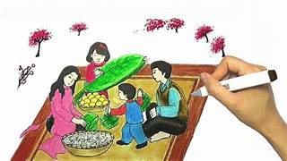

Lời Ngỏ
Chào mừng bạn đến với báo tường trực tuyến, nơi chia sẻ những điều thú vị!
Chào mừng bạn đến với báo tường trực tuyến, nơi chia sẻ những điều thú vị!
Chào tết 2025
Cười thả ga với những câu chuyện hài hước.
Một bà già vào shop, hỏi cô nhân viên bán hàng:
- Tôi muốn có một món quà tặng cho con trai tôi nhân ngày Tết!
- Thưa, anh ấy như thế nào ạ để cháu tư vấn cho bà?
- Con trai tôi cao 1,8m, đẹp trai, khỏe mạnh, độc thân. Hơn nữa là thứ gì nó cũng có rồi, nên tôi chẳng biết mua tặng nó thứ gì nữa!
Những ngày Tết đến, xuân về, có lẽ là những ngày mà nhiều đứa trẻ vùng quê nghèo như em luôn chờ đón. Bởi khi Tết đến, chúng em sẽ được diện quần áo mới đi chơi, được mọi người mừng tuổi lì xì cho nhiều tiền tiêu vặt. Được ăn rất nhiều món ngon mà chỉ dịp Tết mới thường hay có.
Khi Tết đến, mỗi nhà đều trang trí cho gia đình mình thật đẹp, nhà nào cũng sắm sửa, hoa đào, hoa mai, cây quất…Trên bàn thờ xuất hiện mâm ngũ quả với đủ loại xanh, đỏ, vàng… rồi bánh kẹo, mứt Tết, rượu vang, rượu sâm banh…Trước cửa cổng mỗi nhà đều treo lá cờ đỏ sao vàng thể hiện cho việc thái bình, thịnh trị. Trên những con đường xuất hiện những câu đối băng rôn khẩu hiệu vô cùng vui vẻ, đẹp mắt….
Em không biết Tết có từ bao giờ nhưng khi em bắt đầu sinh ra thì đã có Tết. Tết thường được bắt đầu vào ngày cuối cùng của một năm tính theo âm lịch có năm thì ngày 29, có năm là 30 cho tới hết mùng 2 Tết chính vì vậy người xưa thường nói một năm có ba ngày Tết là vì thế.
Nhưng những năm gần đây đất nước ta ngày càng phát triển, nền kinh tế cũng tăng theo, nên Tết thường được kéo dài hơn tầm một tuần lễ (7 ngày) để tiện cho những người công tác, làm ăn ở xa có thể về quê ăn Tết cùng gia đình, xum vầy bên mâm cỗ. Tết luôn là dịp vui vẻ rộn rã tiếng cười đùa. Cầu cho năm mới bình an, phát tài, hạnh phúc ngập tràn. Tết là dịp để người ta tiễn biệt những cái cũ đi, những điều buồn, điều không may mắn sẽ đi theo cùng năm cũ để đón một năm mới về sẽ mang lại những niềm hy vọng mới. Trong những ngày Tết như 30, mùng 1, nhà nào cũng thắp hương làm mâm cơm cúng ông bà tổ tiên, thể hiện sự thành kính với những lớp người trước của mình.
Năm nào cũng thế, mẹ hay nấu thật nhiều món ngon như bánh chưng, nem, giò, chả, canh măng… để cúng ông bà tổ tiên. Đêm 30 là tối giao thừa luôn tạo cho em rất nhiều xúc động bởi nó là khoảnh khắc thiêng liêng nhất trong năm. Khi tiếng chuông điểm 12 giờ thì những màn pháo hoa sẽ nổ ra những bông pháo hoa bay vút lên cao rồi tỏa sáng trong bóng đêm, tạo ra những màu sắc lung linh tươi đẹp, trong mắt bọn trẻ con tụi em thì màn pháo hoa luôn là thứ thú vị nhất. Sau khi màn pháo hoa kết thúc sẽ là lúc mà bọn trẻ tụi em gọi nhau í ới để ra cổng chùa hái lộc, mang những cành lộc may mắn về nhà cắm lên bàn thờ. Cầu mong cho năm mới mình sẽ học giỏi hơn, được nhiều điểm 10 hơn, cầu mong cho ông bà, cha mẹ được mạnh khỏe bình an.
Sáng mùng 1 Tết chúng em thường được cha mẹ đưa đi chúc Tết mừng tuổi ông bà, rồi các cô, dì, chú, bác trong gia đình.Tết thật sự là những ngày đặc biệt thiêng liêng nhất trong năm. Nó là cơ hội để cả gia đình có điều kiện sum vầy, vui vẻ bên nhau, là dịp cho mọi người diện những bộ quần áo mới, là khi khép lại mọi buồn phiền không may mắn ở năm cũ, để chào đón một năm mới an lành, tốt đẹp hơn.
Triển lãm những bức tranh tuyệt vời.
Tết Ất Tỵ, rắn vàng về,
Phát tài phát lộc tràn trề niềm vui.
Gia đình hạnh phúc đủ đầy,
Xuân sang đón lộc, những ngày bình an.